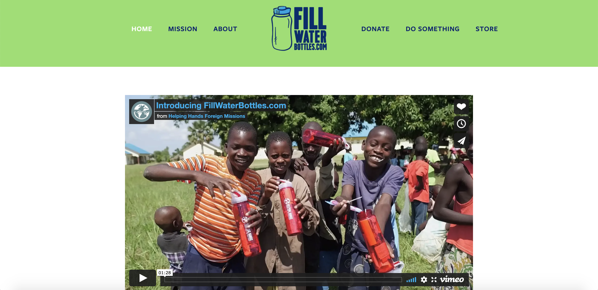
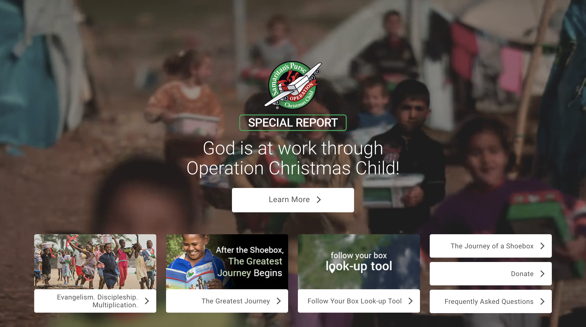
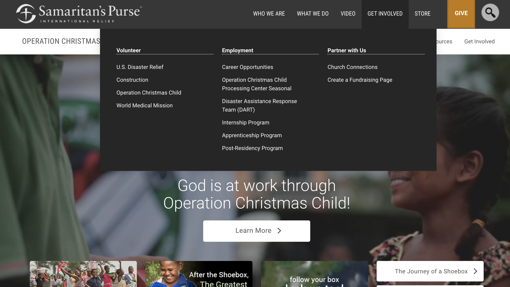
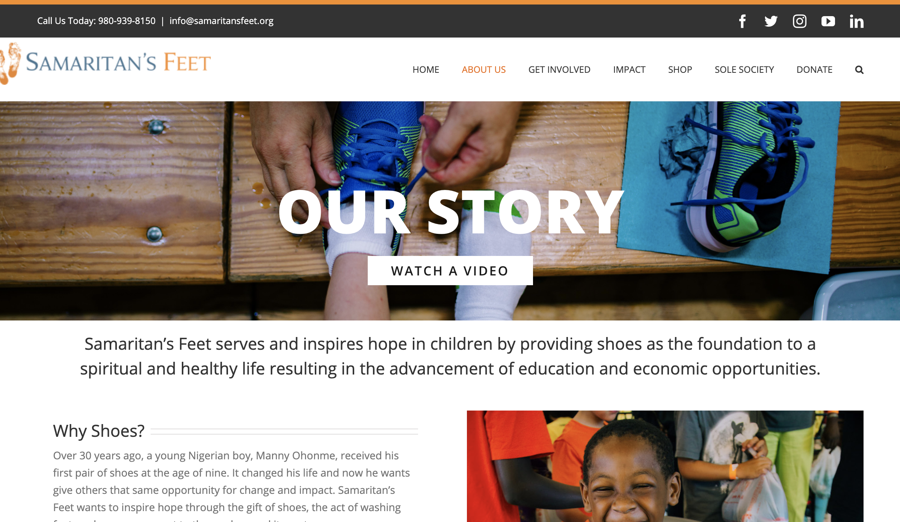
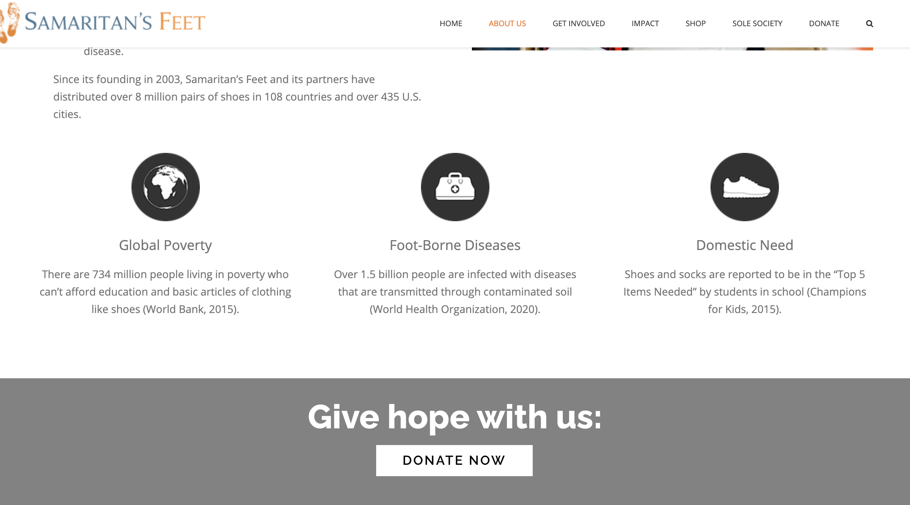

Primary + Secondary Research
Researching the client and users.
Primary Research
FillWaterBottles.com is a non-profit focused on meeting practical needs of individuals around the world through the gift of a water bottle. Groups and individuals purchase water bottles and a few small, essential items to fill the bottles. They are then transported to areas in need and delivered to homes, schools, medical clinics, and individuals. What I want to understand from my initial research is the full expanse of parties involved in making this process work.
Helping Hands Foreign Missions
HHFM is the larger organization that encompasses FillWaterBottles.com. They are the administration that locates target areas in need, and organizes groups to transport bottles.
Volunteers
Volunteers play a large roll in the organization. They account for the roles filled from packing the bottles, to transporting them, to delivering them.
Donors
HHFM and FillWaterBottles.com has many donors who may be physically unable to pack or deliver bottles themselves, but give so the work can be accomplished.
Secondary Research
A similar mission and organization is Operation Christmas Child. This organization employs volunteers across the world to pack both practical and fun items in a shoebox to be delivered to vulnerable children.
Their website has very clear tabs to click for information. Not only do they stand out against their background as a button, but they clearly describe the action being taken when they are pressed. Their “Get Involved” tab is divided into sections. This way, users can more easily find what they need, and be given information easily.
The next organization I looked into is Samaritan’s Feet. This group collects shoes to be distributed to children in need. They start by giving users their story on the website. This information being given on the home page quickly tells the heart of the ministry.
The website has uniform icons that express the values of the organization and the reasoning behind what they are doing. This provides a visual for users to grasp information quickly. Overall, the entirety of the website is broken down into easily understood sections. It begins with the story, then leads to more in-depth information on the subject, and ends with a call to action.